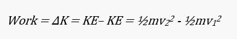
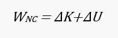
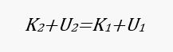

Work, Power, and Energy
-
Work
- Work is a measure of the amount of change (in a general sense) that a force produces when it acts on a body. The change may be in the velocity of the body, in its position, or in its size or shape.
- By definition, the work done by a force acting on a body is equal to the product of the force and the distance through which the force acts, provided that F and s are in the same direction. Thus
- W = Fs
- Work = Force x distance
- Work is a scalar quantity; no direction is associated with it. If F and s are not parallel but F is at the angle θ with respect to s, then
- Since cos0°= 1, this formula becomes W = Fs when F is parallel to s.
- When F is perpendicular to s, θ = 90° and cos 90° = 0. No work is done in this case
- The unit of work is the product of a force unit and a length unit. In SI units, the unit of work is the joule (J).
- 1 joule (J) = 1 Newton-meter = 0.738 ft•lb
-
Power
- Power is the rate at which work is done by a force.
- Thus.
- The more power something has, the more work it can perform in a given time.
- Two special units of power are in wide use, the watt and the horsepower, where
- 1 watt (W) = 1 J/s = 1.34 x 10-3hp
- 1 horsepower (hp) = 550 ft.lb/s = 746 W
- When a constant force F does work on a body that is moving at the constant velocity v, if F is parallel to v, the power involved is
- because s/t = v; that is
- P = Fv
- Power = force x velocity
-
Energy
- Energy is that property something has that enables it to do work. It is given to an object when a force does work on the object. The amount of energy transferred to the object equals the work done. The more energy something has, the more work it can perform. Two general categories of energy are kinetic energy and potential energy.
- The units of energy are the same as those of work, namely the joule and the foot-pound.
- Kinetic Energy (K)
- The energy a body has by virtue of its motion is called kinetic energy.
- If the body’s mass is m and its velocity is v, its kinetic energy is
- Kinetic energy = K = ½mv^2
- 
- Potential Energy (U)
- The energy a body has by virtue of its position is called potential energy.
- The gravitational potential energy of a body of mass m at a height h above a given reference level is
- Gravitational potential energy = U = mgh
- Work done by gravity = -ΔU
- Work done by external force = ΔU
- where g is the acceleration due to gravity.
- Mechanical Energy (U)
- The mechanical energy of an object is the sum of its kinetic energy and potential energy.
- Conservation of Energy
- According to the law of conservation of energy, energy cannot be created or destroyed, although it can be transformed from one kind to another.
- The total amount of energy in the universe is constant. A falling stone provides a simple example: More and more of its initial potential energy turns to kinetic energy as its velocity increases, until finally all its kinetic energy has become potential energy when it strikes the ground. The kinetic energy of the stone is then transferred to the ground as work by the impact.
- In general...
- Work done (by nonconservative forces) on an object = change in object’s KE + change in object’s PE
- 
- If there’s No nonconservative Force, then:
- 0 = ΔK + ΔU
- (conservative forces only)
- ΔK = -ΔU
- (Kinetic Energy gained = Potential Energy lost)
- -ΔK = ΔU
- (Kinetic Energy lost = Potential Energy gained)
- 
-
Sample Problems
- 1. A box moves 10\,\text m10m10, space, m horizontally as a force F=20\,\text NF=20NF, equals, 20, space, N is applied downward. What is the work done on the box by FFF during the displacement?
- 2. A crate is moved across a frictionless floor by a rope THAT is inclined 30 degrees above horizontal. The tension in the rope is 50 N. How much work is done in moving the crate 10 meters?
- 3. A 10 kg weight is suspended in the air by a strong cable. How much work is done, per unit time, in suspending the weight?
- 4. How many joules of work are done against a cart when a force of 50 N pushes it 1 kilometer away?
- 5. Work of 2000 J is required to push an object. How much work is required to lift the same object if the distance pushed is 3 times bigger?